主帖标题: 占事: 上海大盘今天走势如何?
公历时间：2008年3月5日7时57分
干支：戊子年 甲寅月 甲辰日 戊辰时
旬空：午未 子丑 寅卯 戌亥
神煞：驿马─寅 桃花─酉 日禄─寅 贵人─丑，未
震宫：震为雷（六冲） 离宫：离为火（六冲）
六神 【本 卦】 【变 卦】
玄武 ▄▄ ▄▄ 妻财庚戌土 世X-> ▄▄▄▄▄ 子孙己巳火 世
白虎 ▄▄ ▄▄ 官鬼庚申金 ▄▄ ▄▄ 妻财己未土
螣蛇 ▄▄▄▄▄ 子孙庚午火 ▄▄▄▄▄ 官鬼己酉金
勾陈 ▄▄ ▄▄ 妻财庚辰土 应X-> ▄▄▄▄▄ 父母己亥水 应
朱雀 ▄▄ ▄▄ 兄弟庚寅木 ▄▄ ▄▄ 妻财己丑土
青龙 ▄▄▄▄▄ 父母庚子水 ▄▄▄▄▄ 兄弟己卯木
兄空,高开,震荡,涨落无常,但财墓于日建.恐收阴.
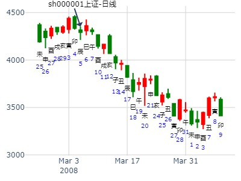
济川药业2021年。 震之离。
时间: 2021-03-28 22时21分
干支: 辛丑年辛卯月乙亥日 (旬空: 申酉 )
震为雷 离为火
六神 伏神 本 卦 变 卦
玄武 ▅▅ ▅▅ 妻财戌土 世Ｘ→ ▅▅▅▅▅ 子孙巳火 世
白虎 ▅▅ ▅▅ 官鬼申金 ▅▅ ▅▅ 妻财未土
腾蛇 ▅▅▅▅▅ 子孙午火 ▅▅▅▅▅ 官鬼酉金
勾陈 ▅▅ ▅▅ 妻财辰土 应Ｘ→ ▅▅▅▅▅ 父母亥水 应
朱雀 ▅▅ ▅▅ 兄弟寅木 ▅▅ ▅▅ 妻财丑土
青龙 ▅▅▅▅▅ 父母子水 ▅▅▅▅▅ 兄弟卯木
2021-03-28
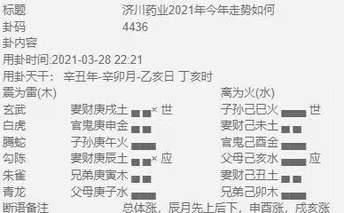
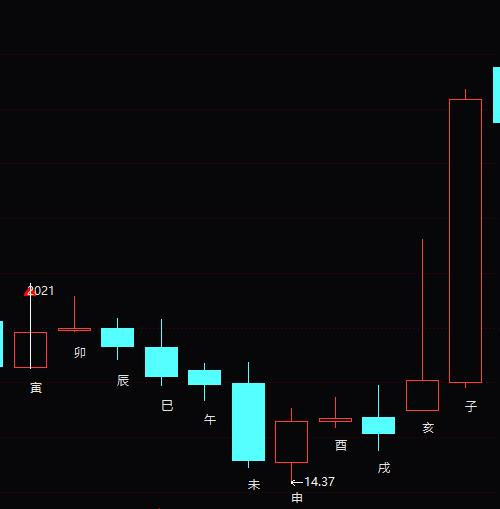
男 占事：4月21到4月25日上海大盘走势
公历起卦时间：2014年4月20日18时1分 (在线摇卦)
干支：甲午年 戊辰月 辛酉日 丁酉时 （日空：子丑）
震宫：震为雷 (六冲) 离宫：离为火 (六冲)
六神 伏神 本 卦 变 卦
腾蛇 妻财庚戌土 ▅▅ ▅▅ 世 ╳→ 子孙己巳火 ▅▅▅▅▅ 世
勾陈 官鬼庚申金 ▅▅ ▅▅ 妻财己未土 ▅▅ ▅▅
朱雀 子孙庚午火 ▅▅▅▅▅ 官鬼己酉金 ▅▅▅▅▅
青龙 妻财庚辰土 ▅▅ ▅▅ 应 ╳→ 父母己亥水 ▅▅▅▅▅ 应
玄武 兄弟庚寅木 ▅▅ ▅▅ 妻财己丑土 ▅▅ ▅▅
白虎 父母庚子水 ▅▅▅▅▅ 兄弟己卯木 ▅▅▅▅▅
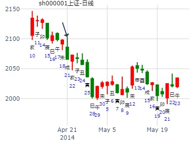
电广传煤午月走势
时间: 2016-06-13
干支: 丙申年甲午月丙寅日 (旬空: 戌亥 )
震为雷 离为火
六神 伏神 本 卦 变 卦
青龙 ▅▅ ▅▅ 妻财戌土 世Ｘ→ ▅▅▅▅▅ 子孙巳火 世
玄武 ▅▅ ▅▅ 官鬼申金 ▅▅ ▅▅ 妻财未土
白虎 ▅▅▅▅▅ 子孙午火 ▅▅▅▅▅ 官鬼酉金
腾蛇 ▅▅ ▅▅ 妻财辰土 应Ｘ→ ▅▅▅▅▅ 父母亥水 应
勾陈 ▅▅ ▅▅ 兄弟寅木 ▅▅ ▅▅ 妻财丑土
朱雀 ▅▅▅▅▅ 父母子水 ▅▅▅▅▅ 兄弟卯木
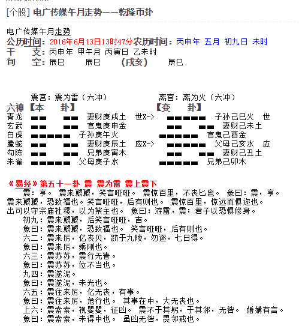
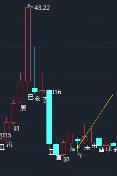
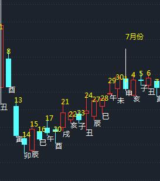
出生：2020 年 性别：男 占事：000799 7月
公历起卦时间：2020年7月1日7时21分 (在线摇卦)
干支：庚子年 壬午月 乙巳日 庚辰时 （日空：寅卯）
神煞：驿马－亥 桃花－午 日禄－卯 贵人－子，申
震宫：震为雷 (六冲) 离宫：离为火 (六冲)
六神 伏神 本 卦 变 卦
玄武 妻财庚戌土 ▅▅ ▅▅ 世 ╳→ 子孙己巳火 ▅▅▅▅▅ 世
白虎 官鬼庚申金 ▅▅ ▅▅ 妻财己未土 ▅▅ ▅▅
螣蛇 子孙庚午火 ▅▅▅▅▅ 官鬼己酉金 ▅▅▅▅▅
勾陈 妻财庚辰土 ▅▅ ▅▅ 应 ╳→ 父母己亥水 ▅▅▅▅▅ 应
朱雀 兄弟庚寅木 ▅▅ ▅▅ 妻财己丑土 ▅▅ ▅▅
青龙 父母庚子水 ▅▅▅▅▅ 兄弟己卯木 ▅▅▅▅▅
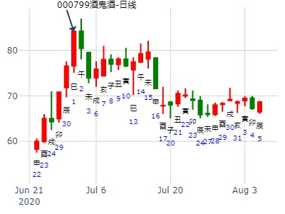
马后炮：子孙太旺则见顶。
主帖标题: 7月18日至7月22日大盘预测
公历时间：2022年7月15日17时6分 农历时间：壬寅年 六月十七日酉时
干 支：壬寅年 丁未月 己巳日 癸酉时
旬 空：辰巳 寅卯 戌亥 戌亥
神 煞：驿马─亥 桃花─午 日禄─午 贵人─子，申
中国预测网纳甲六爻排盘
震宫：震为雷（六冲） 离宫：离为火（六冲）
六神 【本 卦】 【变 卦】
勾陈 ▄▄ ▄▄ 妻财庚戌土 世× ▄▄▄▄▄ 子孙己巳火 世
朱雀 ▄▄ ▄▄ 官鬼庚申金 ▄▄ ▄▄ 妻财己未土
青龙 ▄▄▄▄▄ 子孙庚午火 ▄▄▄▄▄ 官鬼己酉金
玄武 ▄▄ ▄▄ 妻财庚辰土 应× ▄▄▄▄▄ 父母己亥水 应
白虎 ▄▄ ▄▄ 兄弟庚寅木 ▄▄ ▄▄ 妻财己丑土
螣蛇 ▄▄▄▄▄ 父母庚子水 ▄▄▄▄▄ 兄弟己卯木
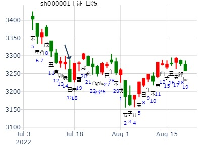
主帖标题: 8.3上证大盘涨跌情况
上卦真乱。再摇一卦： 8月3日中国股市涨跌？
起卦方式：手工指定 周易天地
公历时间：2007年8月2日17时28分
干支：丁亥年 丁未月 戊辰日 辛酉时 旬空：午未 寅卯 戌亥 子丑
震宫：震为雷（六冲） 离宫：离为火（六冲）
朱雀 ▄▄ ▄▄ 妻财庚戌土 世X-> ▄▄▄▄▄ 子孙己巳火 世
青龙 ▄▄ ▄▄ 官鬼庚申金 ▄▄ ▄▄ 妻财己未土
玄武 ▄▄▄▄▄ 子孙庚午火 ▄▄▄▄▄ 官鬼己酉金
白虎 ▄▄ ▄▄ 妻财庚辰土 应X-> ▄▄▄▄▄ 父母己亥水 应
螣蛇 ▄▄ ▄▄ 兄弟庚寅木 ▄▄ ▄▄ 妻财己丑土
勾陈 ▄▄▄▄▄ 父母庚子水 ▄▄▄▄▄ 兄弟己卯木
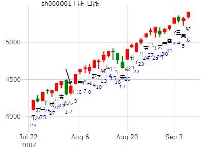
主帖标题: 2020.11.30---12.4上证涨跌（日测）
测周一今天卦
经典冲高回落 。震之离。六冲化六冲，世应相冲。而且同为妻财。
公历时间：2020年11月30日8时33分
干 支：庚子年 丁亥月 丁丑日 甲辰时
旬 空：辰巳 午未 申酉 寅卯
震宫：震为雷（六冲） 离宫：离为火（六冲）
六神 【本 卦】 【变 卦】
青龙 ▄▄ ▄▄ 妻财庚戌土 世× ▄▄▄▄▄ 子孙己巳火 世
玄武 ▄▄ ▄▄ 官鬼庚申金 ▄▄ ▄▄ 妻财己未土
白虎 ▄▄▄▄▄ 子孙庚午火 ▄▄▄▄▄ 官鬼己酉金
螣蛇 ▄▄ ▄▄ 妻财庚辰土 应× ▄▄▄▄▄ 父母己亥水 应
勾陈 ▄▄ ▄▄ 兄弟庚寅木 ▄▄ ▄▄ 妻财己丑土
朱雀 ▄▄▄▄▄ 父母庚子水 ▄▄▄▄▄ 兄弟己卯木
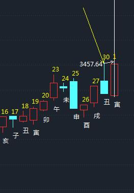
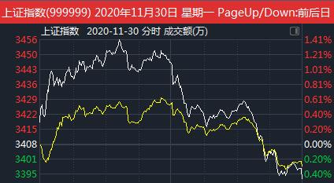